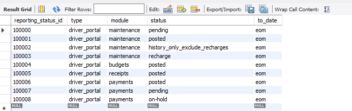
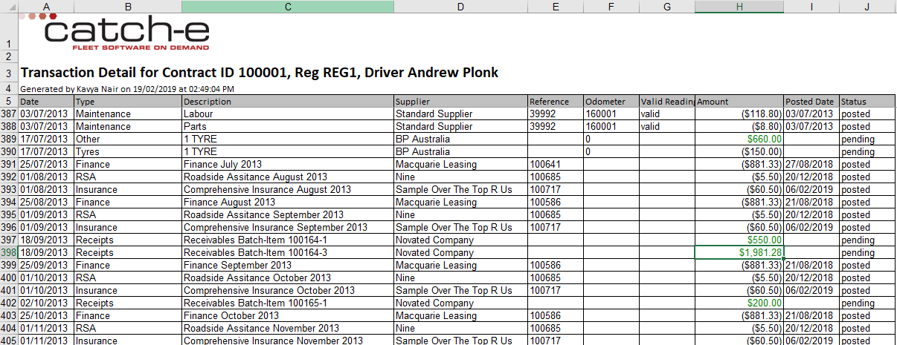

Driver Portal Report
From Help wiki
Main Page → Fleet / Administration / Contracts → FBT → Driver Portal Report
Overview
If the Driver portal Report feature is enabled, it will appear in the report drop list under the Contracts/FBT tab.
When selected, the "Month" list box will be disabled, as this report returns all transactions that have occurred in or before the end of the current month.
The report output is available only to internal users.
The Driver Portal Report normally uses the same groupings as the Funds Check.
Driver portal report status :-
Create a new table called gl_reporting_statuses. This below table governs the allowable status of records to be included in the reports.

If the gl_reporting_statuses is set as below screen shot 'Driver Portal' report total will match 'Transaction' report total.

If the gl_reporting_statuses is set as below screen shot 'Driver Portal' report total will match Funds Check Actual Total.
Below are examples of how the Driver Portal Report can be help you;
Detailed Driver Portal Report Sample:-

Driver Portal Report Output
| Column Header | Data Description |
|---|---|
| Date | The date displayed is the date when the transaction was entered / created. |
| Type | The entry under 'Type' is the description from [gl_posting_groups]name. |
| Description | The Description can vary based on how the report has been set up. Where multiple posting classes have been grouped together, they will all appear under 'Type' ie: 'Comprehensive Insurance, Insurance Fees'. |
| Supplier | Will display the supplier used in the transaction. Receipts and Management Fee transactions will display the [gb_companies]name. |
| Reference | Reference numbers of each transactions. |
| Odometer | Odometer readings is calculated based on existing validated readings using rules defined here Estimated_Odometer_Calculation |
| Valid Reading | The column Valid Reading will only display a value if the odometer_valid_flag is ‘yes’. In all other situations, this should be blank. |
| Amount | The sum of the Amount column will provide the total. Receipts should be displayed as a debit (positive) number and be coloured green. Maintenance and Payment data displayed as credit (negative) number. If totalled, the sum will then be positive if the driver has surplus funds or negative if the driver owes money. |
| Posted Date | The date displayed is the date when the transaction was posted. Where the transaction is still 'pending', the field will be blank. |
| Status | The status displaying in the report based on the table gl_reporting_statuse |
System Notes
- (DEV-20280) Driver Portal Create transactions function. Live dd/03/2019

{kind=link}
{kind=link}
{kind=link}